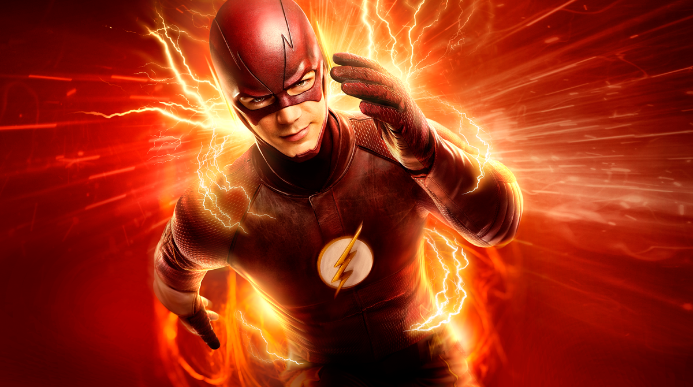

Justin's Favorite TV Shows
Flash
The Flash is a very good tv show that shows the speed of a character after being hit with a lightning bolt. He is the fastest man alive as it says in the beginning of all his shows. The show goes along side the Arrrow. The Arrow would sometimes pop up in the Flash and then the Flash would pop up in the tv show Arrow.
Arrow
The Arrow is another really good show. As stated above, this goes along side the Flash. This show shows the flashbacks that the main charater had experienced. Also he tries to help the city that he lives in be a better place. He tries to locate the bad people in the show and stop them before they do something that could destroy the whole city.